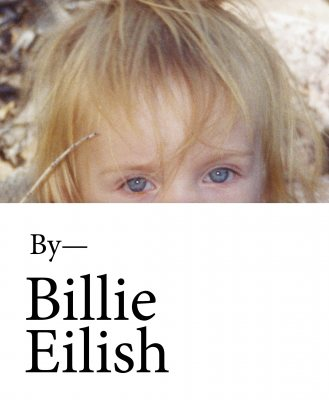
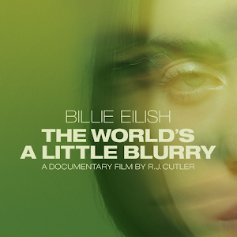

Click image to buy book
 A music superstar and cultural icon like no other, Billie Eilish peels back the layers of her enigmatic persona in this lavish yet highly intimate volume boasting hundreds of previously unseen photographs.
Click image to watch trailer
 An intimate look at the singer-songwriter's journey, navigating life on the road, on stage, and at home, while creating her debut album.